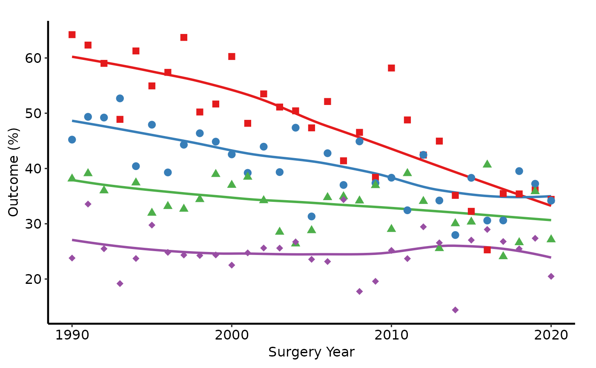
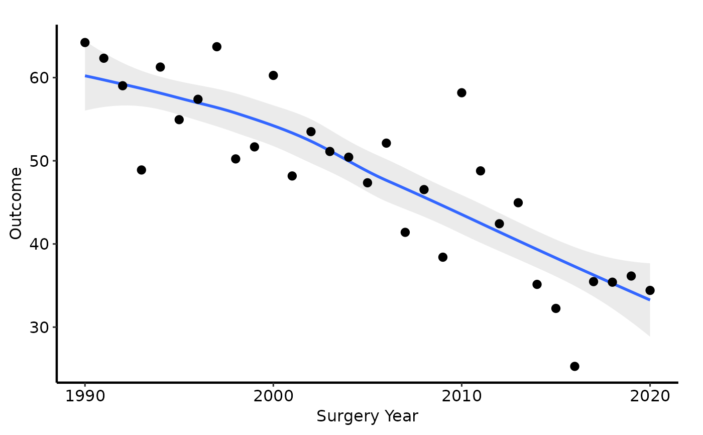

Produces a temporal trend plot for one or more groups: a LOESS smooth
overlaid with annual summary-statistic points (mean or median). Accepts
patient-level data and computes the annual summaries internally, replacing
the manual dplyr grouping pipeline from the SAS template.
Usage
trends_plot(
data,
x_col = "year",
y_col = "value",
group_col = "group",
summary_fn = c("mean", "median"),
smoother = "loess",
span = 0.75,
se = FALSE,
point_size = 2.5,
point_shape = 19L,
alpha = 0.2
)Arguments
- data
Patient-level data frame (one row per patient).
- x_col
Name of the numeric/integer time column (e.g. surgery year). Default
"year".- y_col
Name of the continuous outcome column. Default
"value".- group_col
Name of the grouping column, or
NULLfor a single group. Default"group".- summary_fn
Function used to compute the annual point estimate:
"mean"or"median". Default"mean".- smoother
Smoothing method passed to
ggplot2::geom_smooth():"loess"(default) or any method accepted bygeom_smooth().- span
Span for LOESS smoother. Default
0.75.- se
Logical; show confidence ribbon around smooth? Default
FALSE.- point_size
Size of the annual summary points. Default
2.5.- point_shape
Integer shape code for the summary points, or a named integer vector (one per group level) for different shapes per group. Default
19.- alpha
Transparency of the smooth ribbon when
se = TRUE. Default0.2.
Value
A ggplot2::ggplot() object.
Details
Returns a bare ggplot object. Compose with scale_colour_*,
scale_shape_*, labs(), annotate(), ggplot2::coord_cartesian(),
and hvti_theme().
Examples
dta <- sample_trends_data(n = 600, seed = 42)
# --- Single group (subset to one group) ----------------------------------
one <- dta[dta$group == "Group I", ]
trends_plot(one, group_col = NULL) +
ggplot2::labs(x = "Surgery Year", y = "Outcome", title = "Group I Trend") +
hvti_theme("manuscript")
 # --- Multiple groups with scale_color_brewer -----------------------------
trends_plot(dta) +
ggplot2::scale_colour_brewer(palette = "Set1", name = "Group") +
ggplot2::scale_shape_manual(
values = c("Group I" = 15, "Group II" = 19,
"Group III" = 17, "Group IV" = 18),
name = "Group"
) +
ggplot2::labs(x = "Surgery Year", y = "Outcome (%)") +
hvti_theme("manuscript")
# --- Multiple groups with scale_color_brewer -----------------------------
trends_plot(dta) +
ggplot2::scale_colour_brewer(palette = "Set1", name = "Group") +
ggplot2::scale_shape_manual(
values = c("Group I" = 15, "Group II" = 19,
"Group III" = 17, "Group IV" = 18),
name = "Group"
) +
ggplot2::labs(x = "Surgery Year", y = "Outcome (%)") +
hvti_theme("manuscript")

# --- Median summary statistic + manual colours ---------------------------
trends_plot(dta, summary_fn = "median") +
ggplot2::scale_colour_manual(
values = c("Group I" = "steelblue",
"Group II" = "firebrick",
"Group III" = "forestgreen",
"Group IV" = "goldenrod3"),
name = "NYHA Class"
) +
ggplot2::scale_shape_manual(
values = c("Group I" = 15, "Group II" = 19,
"Group III" = 17, "Group IV" = 18),
name = "NYHA Class"
) +
ggplot2::coord_cartesian(xlim = c(1990, 2020), ylim = c(0, 80)) +
ggplot2::scale_x_continuous(breaks = seq(1990, 2020, 5)) +
ggplot2::scale_y_continuous(breaks = seq(0, 80, 20)) +
ggplot2::labs(x = "Surgery Year", y = "%",
title = "Preoperative NYHA Class Over Time") +
ggplot2::annotate("text", x = 2000, y = 75,
label = "Trend: Preoperative NYHA", size = 4) +
hvti_theme("manuscript")
 # --- With confidence ribbon ----------------------------------------------
trends_plot(dta[dta$group == "Group I", ], group_col = NULL, se = TRUE) +
ggplot2::labs(x = "Surgery Year", y = "Outcome") +
hvti_theme("manuscript")
# --- With confidence ribbon ----------------------------------------------
trends_plot(dta[dta$group == "Group I", ], group_col = NULL, se = TRUE) +
ggplot2::labs(x = "Surgery Year", y = "Outcome") +
hvti_theme("manuscript")

# --- Save ----------------------------------------------------------------
if (FALSE) { # \dontrun{
p <- trends_plot(dta) +
ggplot2::scale_colour_brewer(palette = "Set1") +
ggplot2::labs(x = "Surgery Year", y = "Outcome (%)") +
hvti_theme("manuscript")
ggplot2::ggsave("trends.pdf", p, width = 11.5, height = 8)
} # }